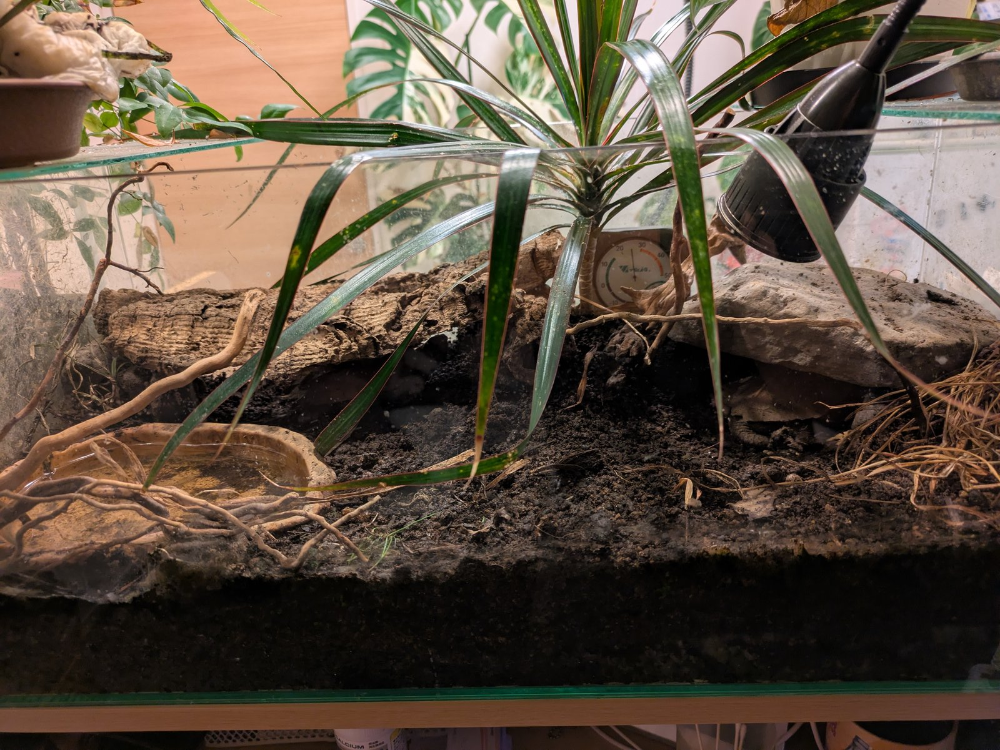
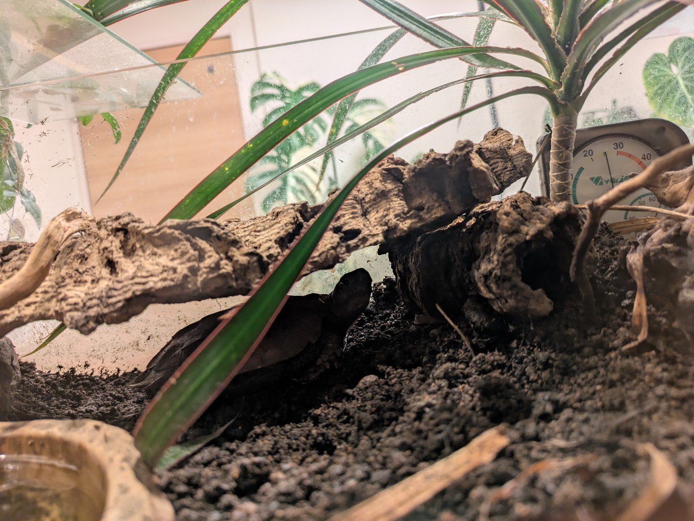
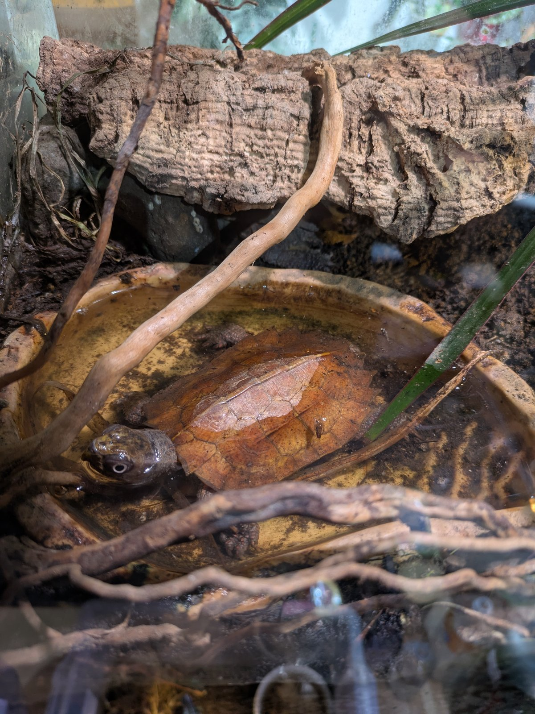
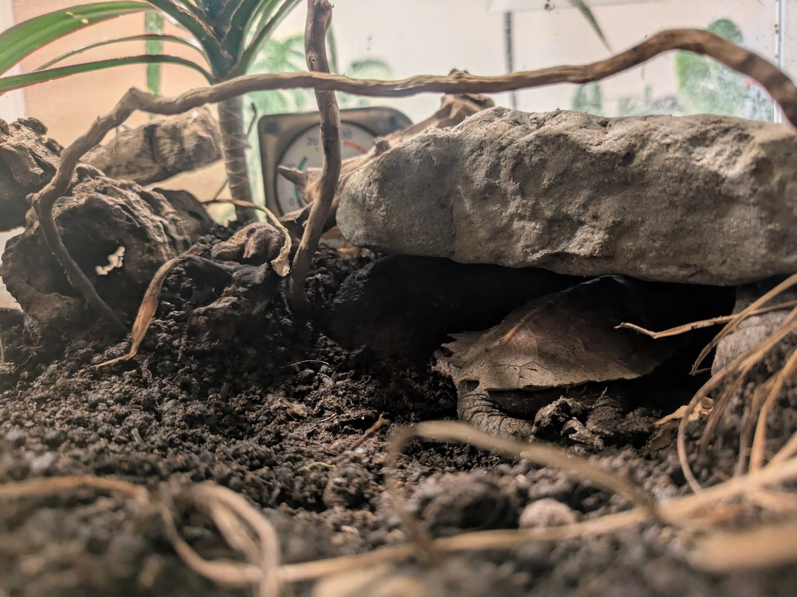

スペングラーヤマガメは、ベトナムや中国南部の湿った山地林の落ち葉の中に暮らす、小さな森のカメです。
甲長は10cmほど。木の葉そっくりの甲羅と、大きな白い目。図鑑で見ると簡単に飼えそうに見えますが、実際はかなり癖のある種類です。
ここでは、私（亀好きさん）が実際に維持している飼育環境を、写真とデータでそのまま公開します。
飼育環境
- ケージ
- 60cmガラス水槽
- 室温
- 25℃
- 床材
- 赤玉土＋腐葉土＋粒状炭
- 湿度管理
- 床材を常に湿らせて維持
- UV
- 弱めのUVB照明
- 水場
- 浅い水入れを設置
- 植物
- 生きた観葉植物（自然のろ過補助）
- 餌
- 生きたコオロギを週2回
- サプリ
- D3カルシウム＋ビタミンをダスティング
- 通気
- 小型ファンで穏やかな換気
床材は「深く、湿らせて」
この種の飼育で最初に決まるのは、床材です。
うちでは赤玉土をベースに腐葉土を混ぜ、消臭と通水性のために粒状の炭を加えています。
深さは重要です。スペングラーは落ち葉や土に浅く潜って落ち着く生き物なので、床材が薄いと隠れ場所が「物陰」しかなくなり、ずっと緊張したままになります。深く湿った床材そのものが、この種にとってのシェルターです。
湿らせた赤玉土は保湿しつつ余分な水を下に逃がしてくれるので、表面はしっとり、中はふかふか、という状態を維持しやすい。腐葉土の匂いがすると、明らかに個体の動きが自然になります。
湿度だけでは足りない。蒸れを防ぐことがもっと重要
スペングラーの飼育で一番多い失敗は、「湿度の数字」だけを追いかけることだと思っています。多湿種と聞いて密閉気味のケージで湿度を保つと、空気が止まり、床材が傷み、皮膚や呼吸のトラブルにつながります。
野生のこのカメがいるのは、湿ってはいるけれど空気が動いている山の斜面の林床です。「湿度が高い」と「空気が淀んでいる」はまったく別のことです。
そこでうちでは、小型ファンをあえて回して、ごく穏やかな空気の流れを作っています。風を当てるのではなく、ケージ内の空気を止めないため。湿った床材＋緩い通気。この組み合わせに落ち着いてから、状態は安定しています。
水場は「浅く」で足りる
スペングラーヤマガメはほとんど泳ぎません。深い水場はむしろ溺れのリスクになります。
うちでは甲羅が半分浸かる程度の浅い水入れをひとつ置いているだけですが、それで十分に使ってくれます。夜間や脱皮前など、自分のタイミングで入って長時間じっとしていることがあります。水はすぐ土で濁るので、こまめな交換が前提です。
餌は生きたコオロギが中心
この種は動くものに強く反応します。うちでは生きたコオロギを週2回、D3カルシウムとビタミンをダスティングして与えています。
人工飼料は個体によっては全く見向きもしません。「配合に餌付けば楽」なのは事実ですが、餌付かない前提で活き餌を安定供給できるかを、飼う前に考えておくべき種類です。
この種は正直、万人向けではない
はっきり書きます。スペングラーヤマガメは、誰にでもすすめられるカメではありません。
- とても臆病で、環境の変化にすぐ緊張する
- ストレスに敏感で、調子を崩すと立て直しが難しい
- 餌付けに苦労することが多く、活き餌の管理が前提になる
- ハンドリングを楽しむカメではなく、「観察するカメ」
逆に言えば、環境を作り込んで、そっと見守ることに喜びを感じられる人には、これほど面白い種類はいません。落ち葉の間からこちらを見上げる姿は、小さな森がそこにあるような感覚になります。




スペングラーは“飼う”というより、
環境を作って静かに観察するカメだと思っています。